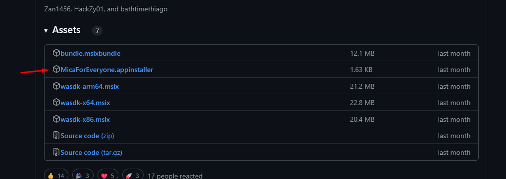
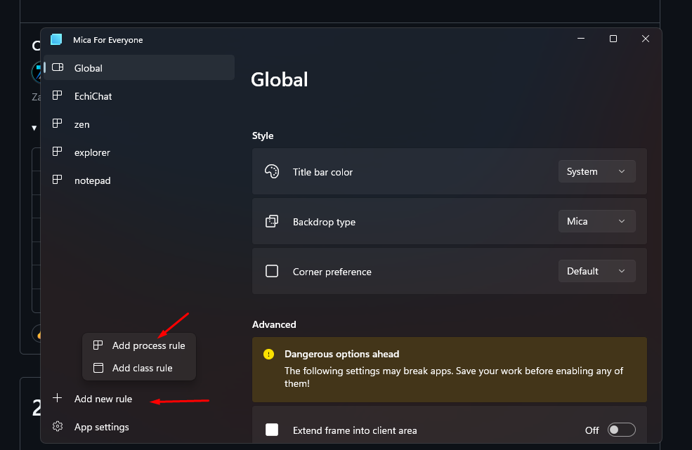
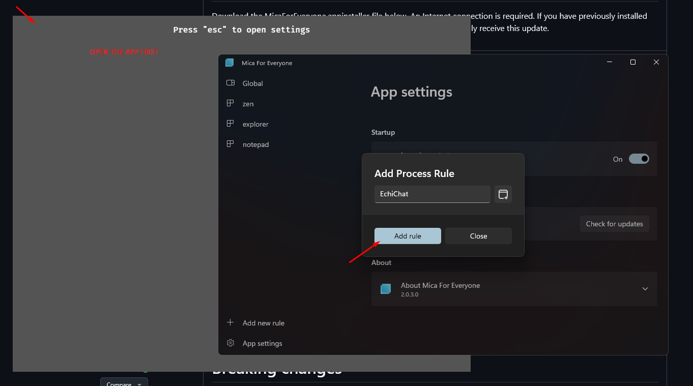
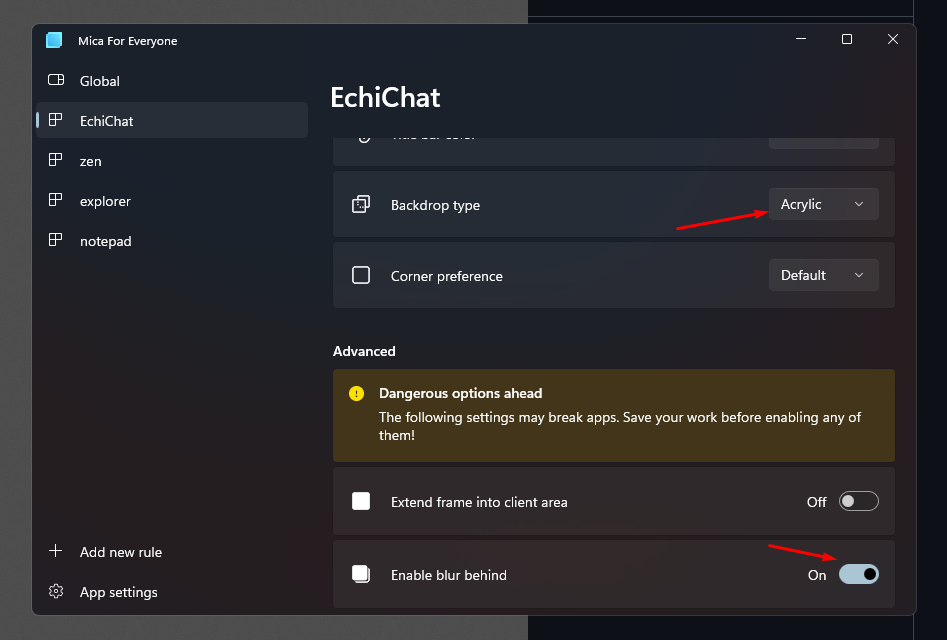

How to Set Up BulletChat for YouTube LiveChat
- Download and install the BulletChat app. (yournameChat.msi)
- Download and install Mica For Everyone. here

- Open Mica For Everyone and click on Add New Rule > Add Process Rule.

- Search for the app name:
BulletChat (yournameChat) -> You need to open the BulletChat App first.

- Set the backdrop type to Acrylic and enable Blur Behind.

- Ensure Transparency Effects are enabled in your Windows Settings:
Go to Settings > Personalization > Colors and turn on Transparency
Effects.
- Run
server.exe included with the app.
- Copy your YouTube Livestream ID (youtube.com/watch?v=here_is_the_id)
and paste it into the BulletChat app.
- Click the Connect button.
- In your streaming software (e.g., OBS), add a Window Capture source and set the
Capture Method to
Windows 10.
- You're done! BulletChat should now display your YouTube LiveChat.